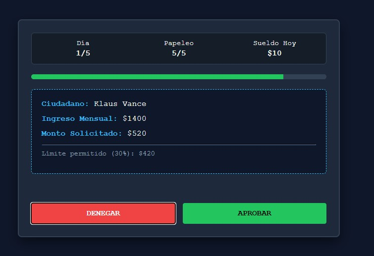
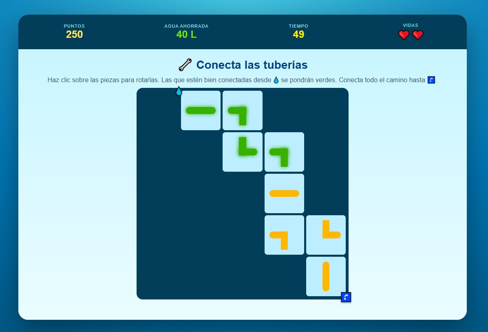
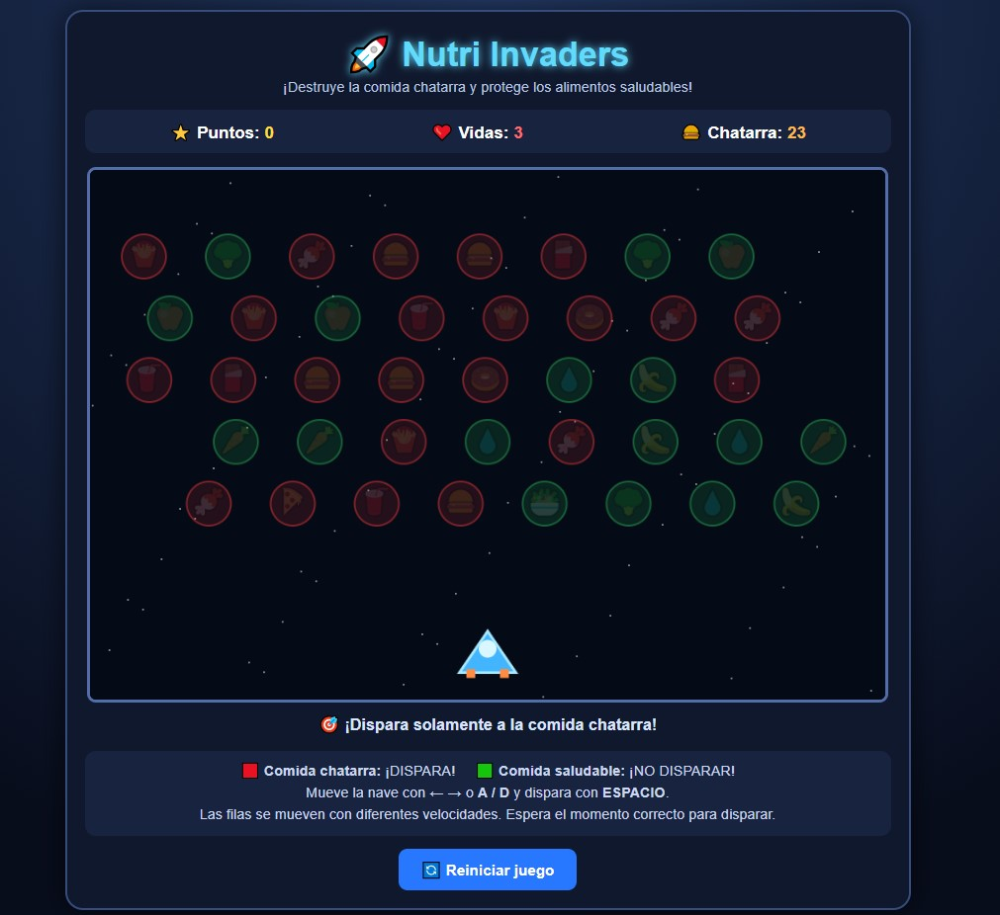

Directorio de Proyectos
Catálogo de videojuegos y prototipos funcionales
Volver al InicioEste directorio aloja el código fuente, los recursos gráficos y la documentación técnica de cada videojuego desarrollado. Explora el catálogo a continuación para acceder a la documentación detallada de cada proyecto. Dentro de cada sección encontrarás las reglas, mecánicas y el enlace para ejecutar la versión jugable en el navegador.

El Ministerio del Invierno Destacado
Simulación y gestión financiera en una ciudad distópica afectada por una crisis energética. Trabaja como analista de créditos durante el día y administra tu presupuesto familiar durante la noche para sobrevivir.
Ver Documentación
Detrás del Muro
Experiencia narrativa interactiva sobre acoso escolar y acoso digital, contada desde las perspectivas de Mateo y Lucía. Las decisiones tomadas durante el primer acto modifican las situaciones del segundo acto y conducen a diferentes desenlaces.
./detras-del-muro/info.html Ver Documentación
Reto Gota: Salva el Agua
Colección de minijuegos enfocados en el uso responsable del agua. Repara fugas, cierra llaves y recolecta lluvia antes de que se agote el tiempo de 60 segundos.
Ver Documentación
EcoDrop: Clasifica y Recicla
Juego de reflejos y agilidad mental. Distintos residuos caen por la pantalla y el objetivo es moverlos al contenedor de reciclaje correcto (papel, plástico, vidrio, orgánico) antes de que toquen el fondo.
Ver Documentación
Nutri Invaders
Shooter 2D con enfoque educativo. Controla una nave espacial y destruye la comida chatarra para sumar puntos, pero ten cuidado de no disparar a los alimentos saludables o perderás vidas.
Ver Documentación
MathBirds
Aventura 2D de control aéreo. Maniobra a un personaje volador para atravesar los obstáculos que contienen la respuesta correcta a 10 operaciones matemáticas básicas.
Ver Documentación